Apache Axis2 Web Administrator's Guide
This document gives you detailed information on the administration console of the Apache Axis2 Web application. Apache Axis2 Administration is all about configuring Apache Axis2 at run time, where the configuration is transient.
Send your feedback to: java-dev@axis.apache.org. (Subscription details are available on the Axis2 site.) Kindly prefix every email subject with [Axis2].
Contents
Introduction
The Apache Axis2 Web application has three main sections: 'Services' lists all the available services deployed in this server, 'Validate' checks the system to see whether all the required libraries are in place and views the system information, and 'Administration' is the Axis2 Web Administration module which is the console for administering the Apache Axis2 installation.
The Axis2 Web Administration module provides a way to configure Axis2 dynamically. It's important to note that this dynamic configuration will NOT be persistent, i.e., if the servlet container is restarted, then all the dynamic configuration changes will be lost.
Log on to the Administration Site
Once Apache Axis2 is successfully installed, the Web application can be accessed (see Installation Guide for instructions). From the Axis2 Web Application Home page you can go to the Administration page by clicking the 'Administration' link. The Login page shown below will appear requesting the user name and password. The default user name is 'admin' (without quotes) and default password is 'axis2' (without quotes).
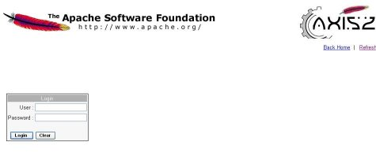
You can change the user name and password values by changing the following two parameters in the axis2.xml as required.
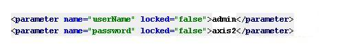
If the log on is successful, you will see the screen below. This is where you can view the configuration and the status of the running system and dynamically configure it.

Administration Options
- Available services
- Available service groups
- Available modules
- Globally engaged modules
- Available phases
- For all Services
- For a Service Group
- For a Service
- For an Operation
Apache Axis2 Web Application Home Page
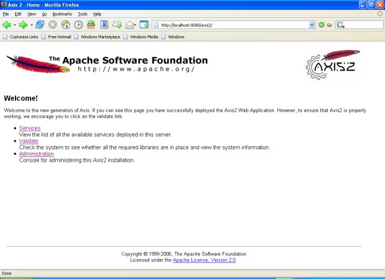
Upload Services
You can upload packaged Apache Axis2 service archive files using this page. This can be done in two simple steps:
- Browse to the location and select the axisService archive file you wish to upload
- Then click Upload

Available Services
The functionality of the 'Available Services' option is almost the same as the functionality of the 'Services' option on the Axis2 Web Application Home page, where it displays a list of deployed services and their operations. As an additional feature, the 'Available Services' page lists details of modules that are engaged to the deployed services and their operations on a global, service or on an operation level.
Using the 'Disengage' link, you can disengage the corresponding module as long as the module is not globally engaged (i.e., engaged to all the services and operations).
Click on a specific service and it will give you the WSDL file of that particular service.
Faulty services of this system will also be listed on this page. Click on a faulty service to view a page that lists the exception stack trace of the exception, which caused the service to be faulty.
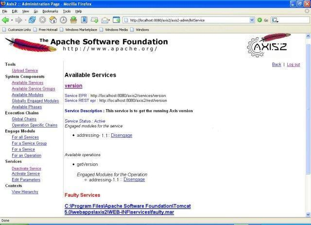
Available Service Groups
Service group is a logical collection of related services, and the 'Available Service Groups' link will list all the available service groups in the system.

Available Modules
To view the available modules in the 'modules' directory of the repository, click 'Available Modules'. This will show you all the available modules in the system. Those modules can be engaged dynamically.
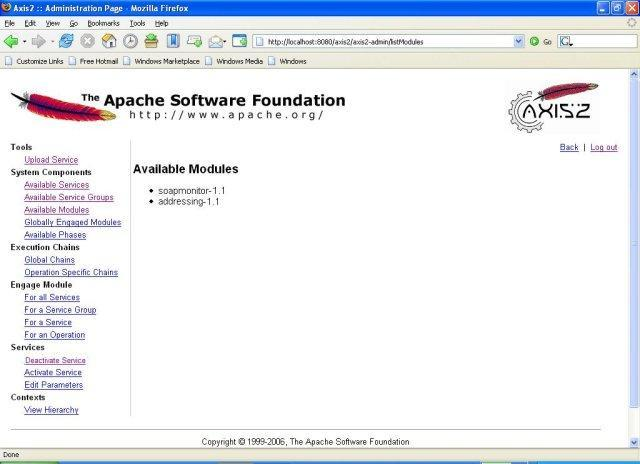
Globally Engaged Modules
Click the 'Globally Engaged Modules' to view the globally engaged modules, if any. If a module is engaged globally, then the handlers that belong to that module will be executed irrespective of the service.
Available Phases
The 'Available Phases' link will display all the available phases. In Axis2, there are two levels of phases:
- System predefined phases (not allowed to be changed)
- User defined phases
The main difference between these two levels is that system predefined phases will be invoked irrespective of the services, while the user defined phases will be invoked when the dispatcher finds the operation. Note that it is essential for module developers and service writers to have a good understanding of phases and phase ordering.
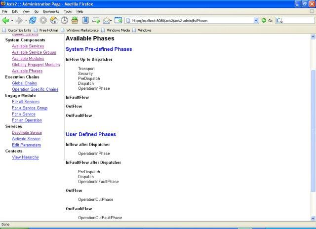
Global Chains
The 'Global Chains' link will display all the Global Execution Chains. The most interesting feature of the Axis2 Web Administration Module is that it provides a very basic method of viewing the global phase list and handlers inside the phases depending on both the phase and handler orders. This kind of information is extremely useful in debugging the system, as there is no other way to list out handlers in the global chains. If you engage a new module, the new handlers will be added to the global chains and will be displayed on this page.
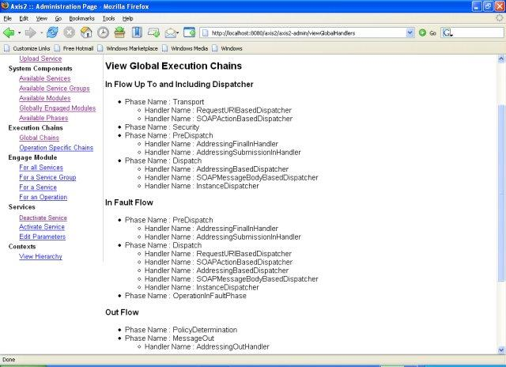
Operation Specific Chains
The 'Operation Specific Chains' link can be used to view the handlers corresponding to a given service in the same order as it is in the real execution chain.
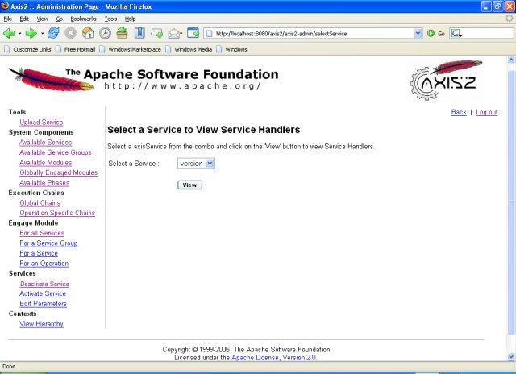
Select the service of whose service handlers you wish to view from the list, and click 'View' to view the handlers. The page below shows the service handlers of the service version
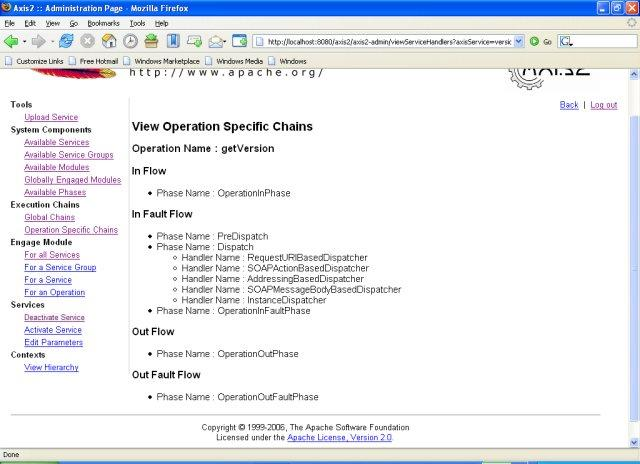
Engaging Modules
The 'Engaging Modules' link allows you to engage modules either globally (to all services), to a service group, to a service, or to an operation depending on the module implementation. If the module was designed to engage the handlers globally, then the handlers in the module can be included in any phase in the system. It can be either a system predefined phase or a user defined phase.
On the other hand, if the module was implemented in such a way that it is going to be deployed to a service or to an operation, then the module cannot be included in any of the System Predefined Phases. Thus it can only be included in User Defined Phases.
Immediately after engaging the module, you can see the status of the engagement indicating whether it is engaged properly or not.
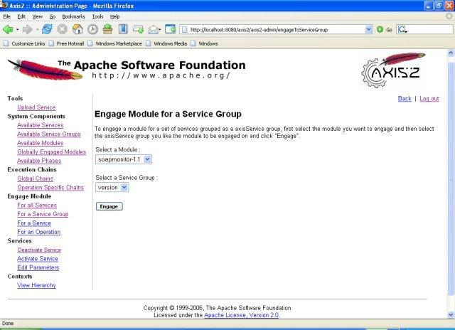
Deactivate Service
The 'Deactivate Service' link under the 'Services' list will lead to the page below. The Deactivate service functionality provides a way to remove unnecessary services from the running system, but the removal is transient--which means that if you restart the system, the service will be active.
To deactivate a service, select a service from the list, select the 'Deactivate service' check box, and then click 'Deactivate'.. The 'Clear' button will clear the 'Deactivate service' check box.
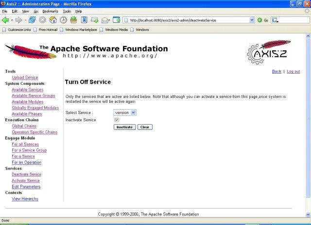
Activate Service
The 'Activate Service' link under the 'Services' list will lead to the page below. The Activate service functionality provides a way to activate services while the system is running, but the activation is transient-- which means that if you restart the system, the service will be inactive.
To activate a service, select a service from the list, select the 'Activate Service' check box, then click 'Activate'. The 'Clear' button will clear the 'Activate service' check box.
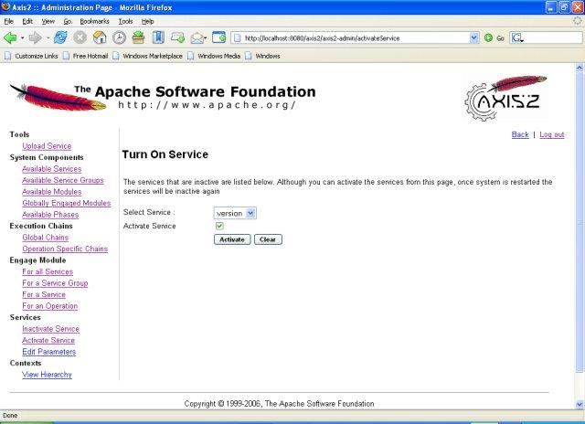
Edit Service Parameters
This functionality provides a way to change the parameters in a service or its operations. These changes will be transient too, which means if you restart the system, the changes will not be reflected.
The 'Edit Parameters' link under the 'Services' list (on the navigation bar) will link to the page where you can select the services of which you want to edit the parameters. Once the service is selected, click 'Edit Parameters'.. This will open the page shown below.
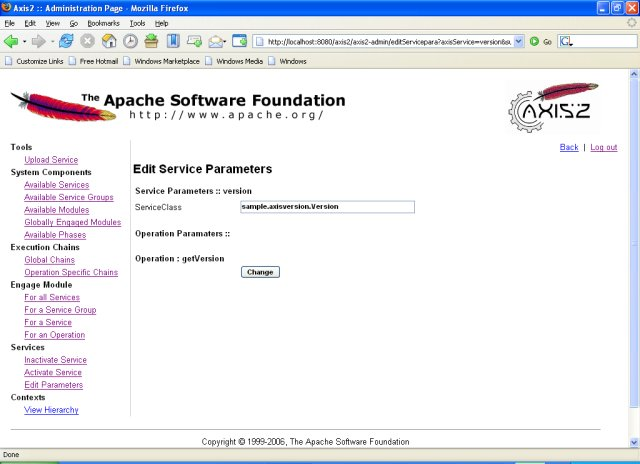
View Hierarchy
By listing the current context hierarchy, the 'View Hierarchy' link provides a means to look at the system state at run time. This will list out all the available service group contexts, service contexts, operation contexts, etc.